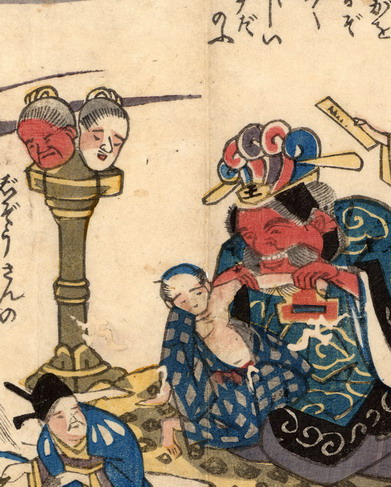

人頭杖。男の頭部と女の頭部が台座の上に載っている。男の肌は赤い。人頭杖の脇に閻魔が座っており、亡者の片肌を脱がせ、腕に見入っている。
出典：親書誌：U426_nichibunken_0170：地震冥途ノ図；ジシンメイドノズ／日付：2010／資源識別子：U426_nichibunken_0170_0003_0000
Copyright (c)2010- International Research Center for Japanese Studies, Kyoto, Japan. All rights reserved.